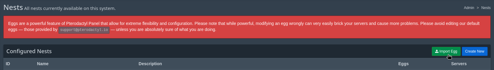
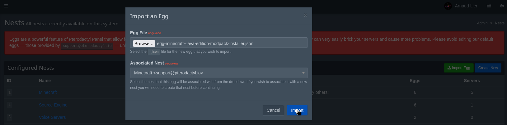
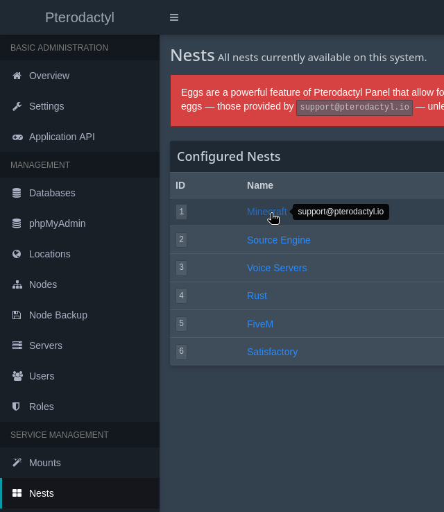
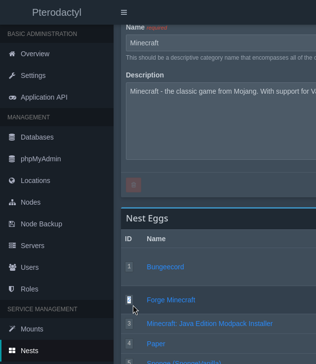

Customize the installation guide so only the relevant instructions are shown to you.
Welcome and thanks for buying this product, Minecraft Modpack Installer for Pterodactyl! Contact information is available at the end of this document, section Contact. Please don't hesitate to reach out if you have any questions.
This modpack installer uses an egg to which servers are switched to
temporarily. The egg has an install script which installs all the
necessary stuff to run the desired modpack. The modpack installer egg
can't be used to run modpacks directly. It is recommended to use the Forge
egg for that which already has a compatible startup command (it fetches
Java Virtual Machine options from
/home/container/unix_args.txt).
This is the same modification as ric-rac's Minecraft Mod Manager & Plugin Manager. You shouldn't do it twice.
This allows to switch to the correct Java Docker image depending on the software used by the modpacks.
You need to have the GoLang development tools and Make before proceeding. On Debian-based operating systems (including Ubuntu) you can install them using:
ARCH=$([ "$(uname -m)" = "x86_64" ] && echo "amd64" || echo "arm64")
wget "https://go.dev/dl/go1.23.3.linux-$ARCH.tar.gz"
sudo rm -rf /usr/local/go && sudo tar -C /usr/local -xzf "go1.23.3.linux-$ARCH.tar.gz"
echo 'export PATH=$PATH:/usr/local/go/bin' | sudo tee -a /etc/profile && . /etc/profile
sudo apt install make
If you use the zsh shell, you may need to add the directory to the
PATH in ~/.zshrc instead.
Clone Pterodactyl Wings source code:
git clone https://github.com/pterodactyl/wings.git
cd wings
Upload the wings.patch contained within this archive to the
directory that was created
Apply the changes, build the executable binaries:
git apply wings.patch
make buildOn each node, you want to stop Wings, replace current wings by the one you built and restart Wings:
systemctl stop wings
cp build/wings_linux_amd64 /usr/local/bin/wings
systemctl start wingsThis add-on makes use of external HTTP APIs. CurseForge is the only API that requires authentication for the retrieval of information about their platforms' modpacks.
To access the CurseForge API, you first need to
create a CFCore account. Then, copy your API key and add another line in your
.env file like this:
CURSEFORGE_API_KEY="$2a$10$iZYWa6jrmyz7hN69sfmInes1FAqrn2ycR.ZdrKKrtOpz/Tn9ETMcK"(This API key will not work, it is just an example!)
On your system, you'll need to install a recent version of Node.js, npm and yarn if you don't have them installed yet. Please follow this link to install Node.js (npm is packed with it): https://nodejs.org/en/download/
Then, install yarn globally with npm:
npm install --global yarnNext, we'll download dependencies then build the panel assets to check that your configuration is operational.
Navigate to where Pterodactyl is installed, e.g.
cd /var/www/pterodactylThen, execute the following commands that will install the dependencies:
yarn installIf you're going to use a Node.js version greater than or equal to 17.x, you may encounter errors due to an incompatibility between the new OpenSSL and the version of webpack used by Pterodactyl. As a workaround, set this environment variable before building assets:
export NODE_OPTIONS=--openssl-legacy-providerRun the panel development build:
yarn run buildIf that worked, we've confirmed that you can build your panel's assets for development! If that failed and your screen turned to red:
upload directory
To proceed, please upload the contents of the
upload directory inside the directory where Pterodactyl is
installed with your favorite (S)FTP client.
The add-on NEEDS an egg to work. You have two options to import the egg (only one is necessary):
Import the egg manually (you can find it at path
upload/database/Seeders/eggs/minecraft/egg-minecraft--java-edition-modpack-installer.json
of this archive).


php artisan migrate --force --seed, which may overwrite
existing eggs if they match the nest and egg names in
database/Seeders/eggs.
Now we just need to do some modifications on Panel files. Fortunately,
there are not much! Under each file name (relative to the directory your
Panel is installed in), there will be a diff. Your mission is to find the
lines which are NOT prefixed by + and add those that are
prefixed by a +.
+ means "add this line". The + symbols at the
start of lines shouldn't be in the final code.
config/services.php
In this file, DON'T replace
CURSEFORGE_API_KEY by your API key. It should have been added
in .env by now.
'ses' => [
'key' => env('AWS_ACCESS_KEY_ID'),
'secret' => env('AWS_SECRET_ACCESS_KEY'),
'region' => env('AWS_DEFAULT_REGION', 'us-east-1'),
],
+
+ 'curseforge_api_key' => env('CURSEFORGE_API_KEY'),
];app/Http/Controllers/Api/Remote/Servers/ServerInstallController.php
use Pterodactyl\Http\Requests\Api\Remote\InstallationDataRequest;
+use Exception;
+use Illuminate\Support\Facades\DB;
+use Pterodactyl\Models\User;
+use Pterodactyl\Services\Minecraft\MinecraftSoftwareService;
+use Pterodactyl\Services\Servers\StartupModificationService;- public function __construct(private ServerRepository $repository, private EventDispatcher $eventDispatcher)
+ public function __construct(private ServerRepository $repository, private EventDispatcher $eventDispatcher,
+ private MinecraftSoftwareService $minecraftSoftwareService, private StartupModificationService $startupModificationService)
{ // Make sure the type of failure is accurate
if (!$request->boolean('successful')) {
$status = Server::STATUS_INSTALL_FAILED;
if ($request->boolean('reinstall')) {
$status = Server::STATUS_REINSTALL_FAILED;
}
+ } else {
+ $this->updateServerImageFromMinecraftSoftware($server);
} return new JsonResponse([], Response::HTTP_NO_CONTENT);
}
+
+ protected function updateServerImageFromMinecraftSoftware(Server $server) {
+ try {
+ if (DB::table('modpack_installations')
+ ->where('server_id', $server->id)
+ ->where('finalized', false)
+ ->exists()) {
+
+ // Update Java Docker image depending on the detected Minecraft version.
+ $this->minecraftSoftwareService->setServer($server);
+ $buildInfo = $this->minecraftSoftwareService->getServerBuildInformation();
+
+ if (isset($buildInfo['java'])) {
+ $availableImages = $server->egg->docker_images;
+ $newImage = $this->getImageForJavaVersion($availableImages, $buildInfo['java']) ?? 'ghcr.io/pterodactyl/yolks:java_' . $buildInfo['java'];
+ $this->startupModificationService->setUserLevel(User::USER_LEVEL_ADMIN)->handle($server, [
+ 'docker_image' => $newImage,
+ ]);
+ }
+ DB::table('modpack_installations')
+ ->where('server_id', $server->id)
+ ->where('finalized', false)
+ ->update(['finalized' => true]);
+ }
+ } catch (Exception) {}
+ }
+
+ protected function getImageForJavaVersion(array $availableImages, string $javaVersion): ?string
+ {
+ if (function_exists('array_find')) {
+ return array_find($availableImages, fn ($v, $k) => str_ends_with($k, ' ' . $javaVersion));
+ }
+ foreach ($availableImages as $name => $avImage) {
+ if (str_ends_with($name, ' ' . $javaVersion)) {
+ return $avImage;
+ }
+ }
+ return null;
+ }
}app/Repositories/Wings/DaemonFileRepository.php use GuzzleHttp\Exception\TransferException;
+use GuzzleHttp\Psr7\Query;
use Pterodactyl\Exceptions\Http\Server\FileSizeTooLargeException; $length = (int) Arr::get($response->getHeader('Content-Length'), 0, 0);
if ($notLargerThan && $length > $notLargerThan) {
throw new FileSizeTooLargeException();
}
return $response->getBody()->__toString();
}
+ /**
+ * Returns fingerprints of given files' content.
+ *
+ * @param $path string[]
+ * @param $algorithm string should be `sha512` or `curseforge`
+ * @return array<string, string>
+ *
+ * @throws \GuzzleHttp\Exception\TransferException
+ * @throws \Pterodactyl\Exceptions\Http\Connection\DaemonConnectionException
+ */
+ public function getFingerprints(array $paths, string $algorithm = 'sha512'): array
+ {
+ Assert::isInstanceOf($this->server, Server::class);
+
+ try {
+ $response = $this->getHttpClient()->get(
+ sprintf('/api/servers/%s/files/fingerprints', $this->server->uuid),
+ [
+ 'query' => Query::build(['files' => $paths, 'algorithm' => $algorithm]),
+ ]
+ );
+ } catch (ClientException|TransferException $exception) {
+ throw new DaemonConnectionException($exception);
+ }
+
+ $response = $response->getBody()->__toString();
+
+ return json_decode($response, true)['fingerprints'];
+ }Some of the following client-side routing related modifications are not needed for every theme or some other add-on might already be adding something similar. In case of doubt, contact us.
app/Transformers/Api/Client/ServerTransformer.phpYour theme or another add-on may have already done this change so make sure this isn't the case.
'internal_id' => $server->id,
+ 'egg_id' => $server->egg_id,
'uuid' => $server->uuid,resources/scripts/api/server/getServer.tsYour theme or another add-on may have already done these changes so make sure this isn't the case.
export interface Server {
id: string;
internalId: number | string;
+ eggId: number;
uuid: string; internalId: data.internal_id,
+ eggId: data.egg_id,
uuid: data.uuid,resources/scripts/routers/routes.ts (or
routes.tsx)
import FileManagerContainer from '@/components/server/files/FileManagerContainer';
+import ModpacksContainer from '@/components/server/minecraft-modpacks/ModpacksContainer';
import SettingsContainer from '@/components/server/settings/SettingsContainer';Your theme or another add-on may have already done the following change so make sure this isn't the case.
interface ServerRouteDefinition extends RouteDefinition {
permission: string | string[] | null;
+ eggIds?: number[];
} {
path: '/files',
permission: 'file.*',
name: 'Files',
component: FileManagerContainer,
},
+ {
+ path: '/modpacks',
+ permission: 'file.*',
+ name: 'Modpacks',
+ component: ModpacksContainer,
+ eggIds: [1, 3],
+ }, {
path: '/files',
permission: 'file.*',
name: Lang.Filemanager,
icon: Icon.Folder,
component: FileManagerContainer,
},
+ {
+ path: '/modpacks',
+ permission: 'file.*',
+ name: 'Modpacks',
+ component: ModpacksContainer,
+ icon: Icon.Folder,
+ eggIds: [1, 3],
+ },The file above contains the numeric identifiers for the eggs for which the new "Modpacks" tab will be shown in the servers' dashboard. It is pre-filled with the default Pterodactyl eggs "Forge Minecraft" and "Vanilla Minecraft", please adjust as needed. Egg IDs can be found in your Pterodactyl Panel, in the admin side. Navigate to "Nests", select the appropriate nest and the egg IDs will be in the first column of the table.


resources/scripts/routers/ServerRouter.tsxYour theme or another add-on may have already done these changes so make sure this isn't the case.
const serverId = ServerContext.useStoreState((state) => state.server.data?.internalId);
+ const serverEggId = ServerContext.useStoreState((state) => state.server.data?.eggId); {routes.server
.filter((route) => !!route.name)
+ .filter((route) =>
+ route.eggIds && serverEggId ? route.eggIds.includes(serverEggId) : true
+ )
.map((route) =>routes/api-client.php Route::group(['prefix' => '/settings'], function () {
Route::post('/rename', [Client\Servers\SettingsController::class, 'rename']);
Route::post('/reinstall', [Client\Servers\SettingsController::class, 'reinstall']);
Route::put('/docker-image', [Client\Servers\SettingsController::class, 'dockerImage']);
});
+ Route::group(['prefix' => '/minecraft-modpacks'], function () {
+ Route::get('/', [Client\Servers\ModpackController::class, 'index']);
+ Route::get('/versions', [Client\Servers\ModpackController::class, 'versions']);
+ Route::post('/install', [Client\Servers\ModpackController::class, 'install']);
+ });
resources/lang/en/activity.php (optional) 'subuser' => [
'create' => 'Added :email as a subuser',
'update' => 'Updated the subuser permissions for :email',
'delete' => 'Removed :email as a subuser',
],
+ 'modpack' => [
+ 'install' => 'Installed modpack :modpack_name (:modpack_id), version :modpack_version_id from :provider',
+ ],
],
];All the following commands need to be executed in the directory where Pterodactyl is installed.
Migrate the database:
php artisan migrateBuild the production assets with yarn:
yarn run build:productionCache new routes and configuration:
php artisan optimizeYou're done! Enjoy!
Make sure you are viewing a server whose egg ID is within those specified
in routes.ts.
Run php artisan optimize in
/var/www/pterodactyl.
Please read the "Importing the egg" section of this document. You need to import an egg for the modpack installer to do its thing.
config/services.php (it
should not contain the API key).
.env under the correct
variable name.
php artisan config:clearphp artisan tinker and writing
config('services.curseforge_api_key') in the prompt.
Try replacing
'User-Agent' => $this->userAgent,by
'User-Agent' => 'Mozilla/5.0 (X11; Linux x86_64; rv:127.0) Gecko/20100101 Firefox/127.0',
in
app/Services/Minecraft/Modpacks/CurseForgeModpackService.php
storage/logs).
If you have any questions about this product or need help with its installation, You can contact us using the following services: